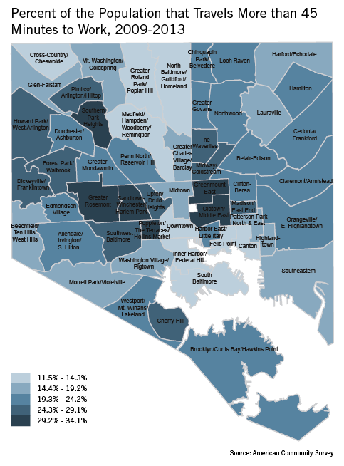

Disconnected Communities

Our Grade: F In the Baltimore region 22% of workers spend 45 minutes or more commuting to work. Many of the workers enduring long commutes are concentrated in centrally located neighborhoods. In Baltimore City 26% of the population live in neighborhoods where more than a quarter of workers commute at least 45 minutes one way to get to a job.
Definition: This indicator measures what percentage of a region’s workers commute at least 45 minutes one way to get to work.
Reason: This is an indicator of whether our transportation system gives you choices. A 2015 study by Harvard economists found that poor children who grow up in some cities and towns have sharply better odds of escaping poverty than similar poor children elsewhere. Among the nation’s 100 largest cities, the one where children face the worst odds of escaping poverty is the city of Baltimore. The study found that the single strongest factor affecting the odds of escaping poverty is commuting time. Backing up the national finding, the Baltimore Neighborhood Indicators Alliance has found a strong correlation between neighborhoods where the highest percentage of workers commute at least 45 minutes and neighborhoods showing signs of distress including the highest levels of unemployment and poverty and the lowest life expectancies.
Who's Doing It Better? Every similarly sized region in the country scores significantly better than the Baltimore region on this measure. From San Diego to Charlotte, Seattle to Orlando, the percentage of workers in our 16 peer regions who commute 45 minutes or more ranges between 9 and 18. At 22% Baltimore is an outlier on this key indicator of upward mobility.
